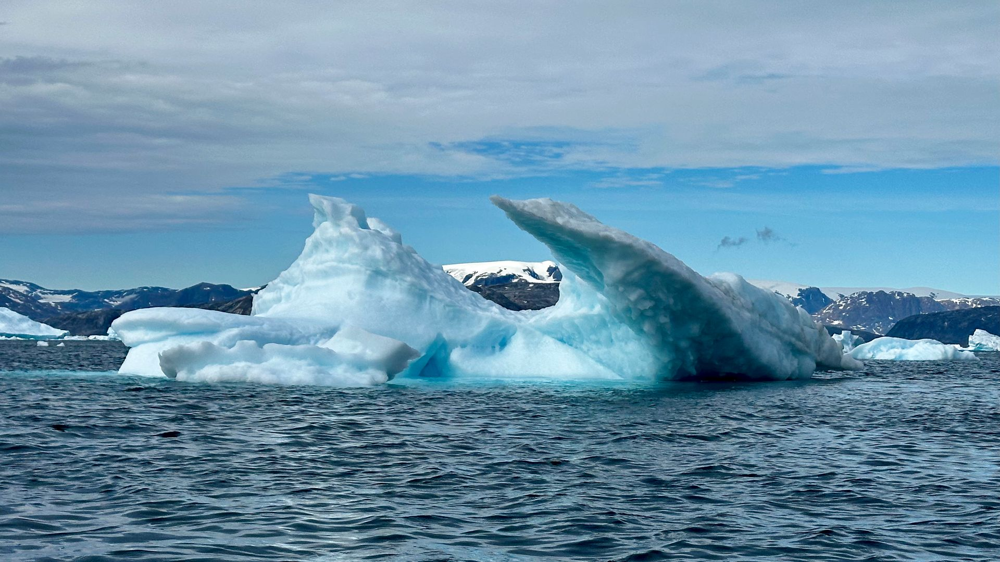
One — the compiler reads the attribute.
Two — parameters are validated before they reach CSS.
Three — channels decide whether effects may compose.
Four — the browser owns the frame loop.
CSS Animations · Scroll
Everything on this page reads real scroll position, not a fixed timer. Some effects use
data-kui-timeline — a native CSS view()/scroll() timeline that
reverses the instant you scroll back up. Others need real measurement — pinning,
scrollytelling, horizontal tracks — so they run through the library's shared JS orchestrator instead.
The bar above the header and the ring in the lower-left corner are both live — watch them as you scroll this page.
Catalog section B — 12 named effects. Nine are live below; three
(reveal-repeat, scroll-skew, reveal-direction-aware) are
documented in the catalog but not yet wired into the shipped library — reveal-repeat
was removed as byte-identical to reveal-once once the activation binder stopped
re-observing after first entry, and the other two have no registered primitive to grep for.
parallax-* and scroll-* use data-kui-timeline, not
data-kui-on — progress-linked, so they reverse on scroll-up by design.
Reveal & fade — 2
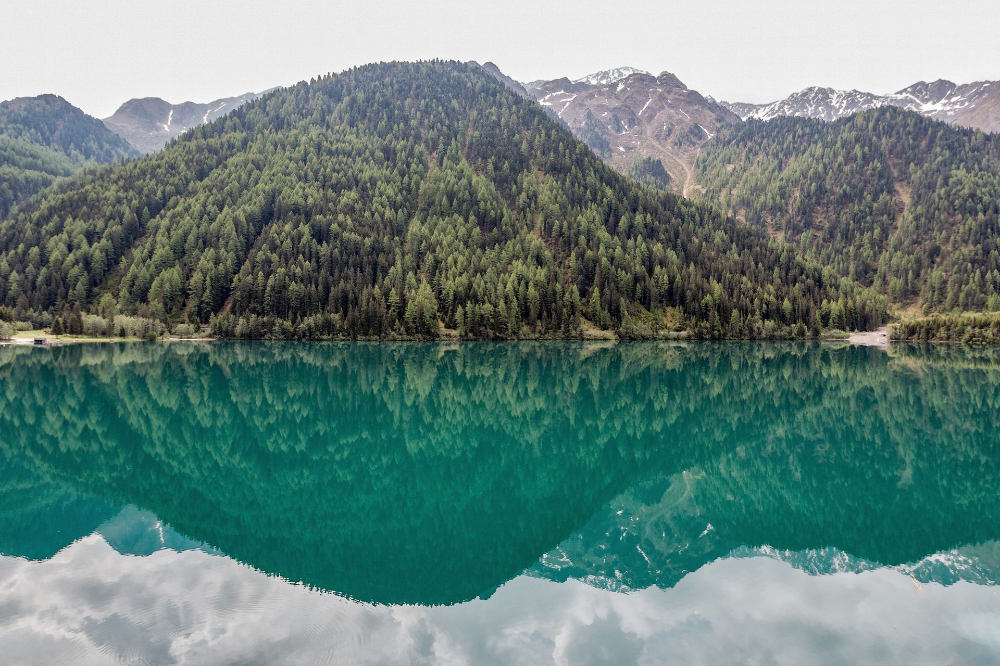
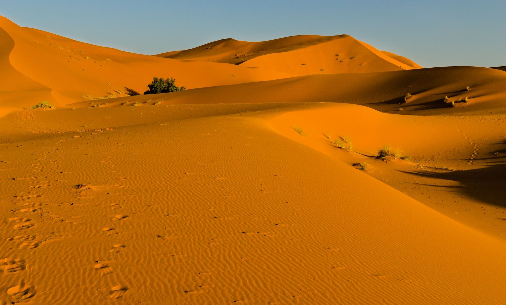
Parallax — 5
Each frame clips a deliberately oversized image so the transform never reveals a bare edge — the amount and direction of oversize differs per effect (see the CSS comments in this page's <style> block).
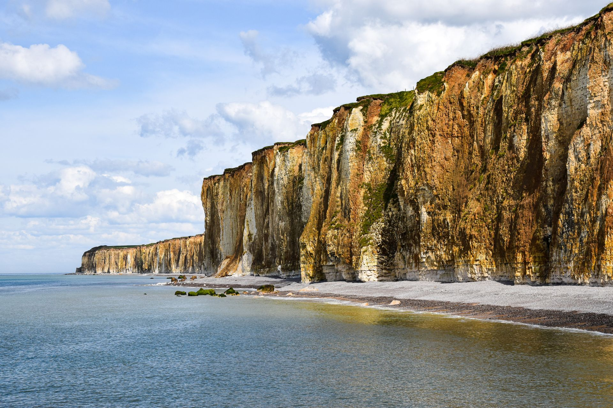
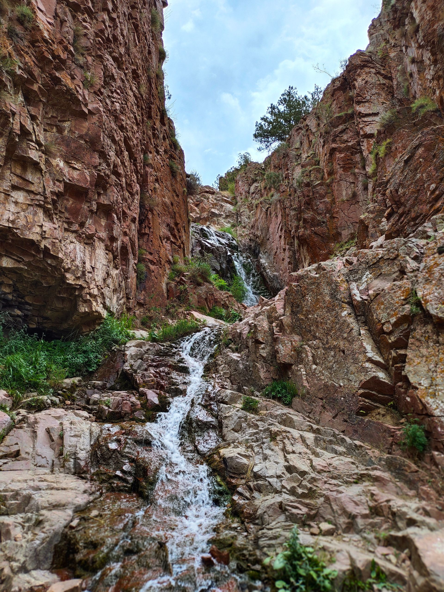

Catalog section C — 11 named effects, all backed by real primitives. Ten are demonstrated below;
video-scrub is verified in kuinetic.js (the same media-scrub
primitive as sequence-scrub, just fed a <video> instead of a frame
pattern) but is left unwired here — this pass sourced photography, not video footage, and wiring a
real <video> element in in place of a frame sequence is a small, well-understood follow-up.
Everything here needs the shared JS orchestrator: measurement, resize invalidation, cleanup.
Pinning — 4
pin-section — the default carries an auto-inserted spacer, so a pin longer than its containing block still reserves scroll room.
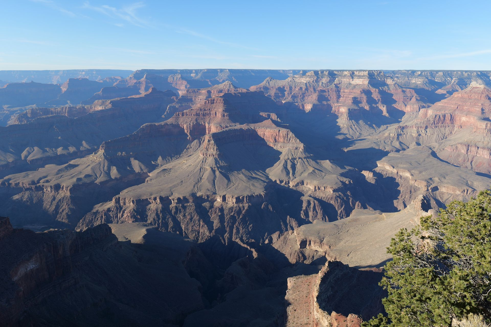
data-kui="pin-section distance:200vh"
pin-until — spacer:false. No spacer is inserted; the sticky panel relies on its own naturally taller sibling for scroll room, the classic sticky-sidebar pattern.
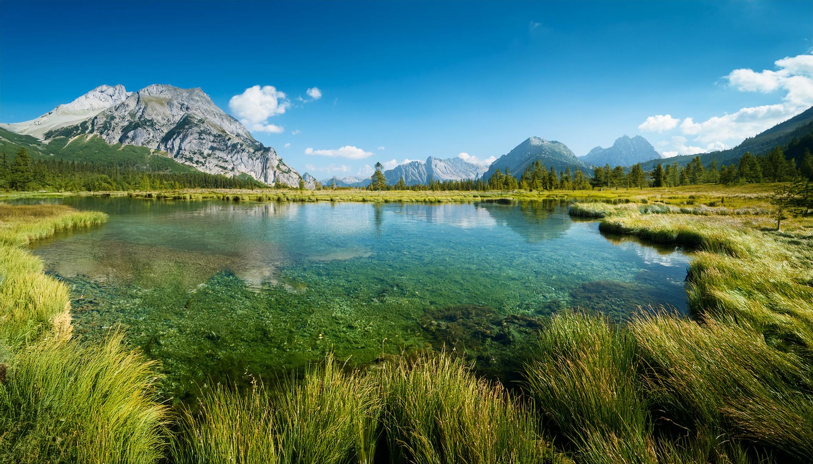
pin-spacer — same primitive as pin-section, spelled out explicitly: the dashed box below the photo is the real <div data-kui-spacer> the primitive inserts into the DOM.
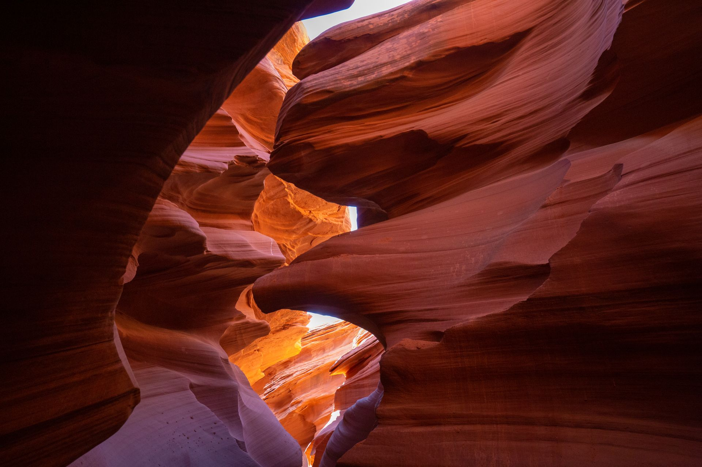
stacking-cards — the pin primitive applied per card, each at its own offset, so the stack builds up naturally as you scroll.
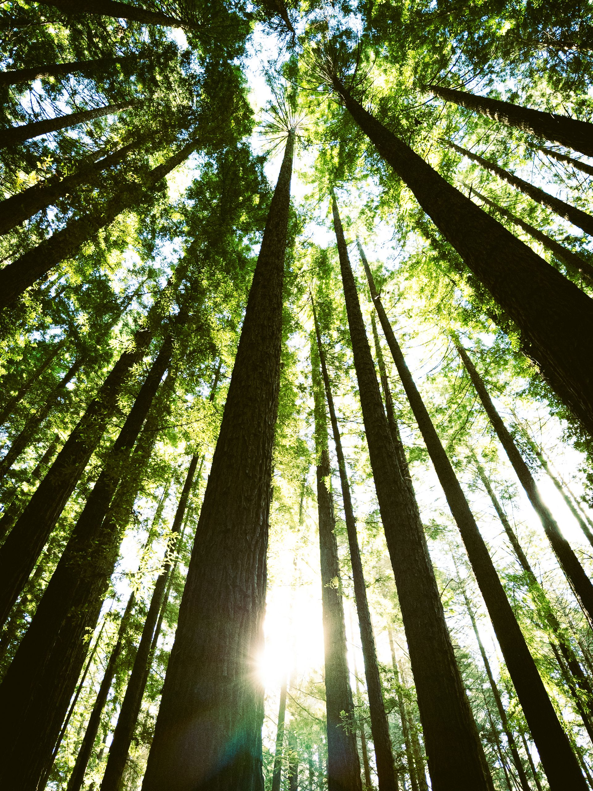
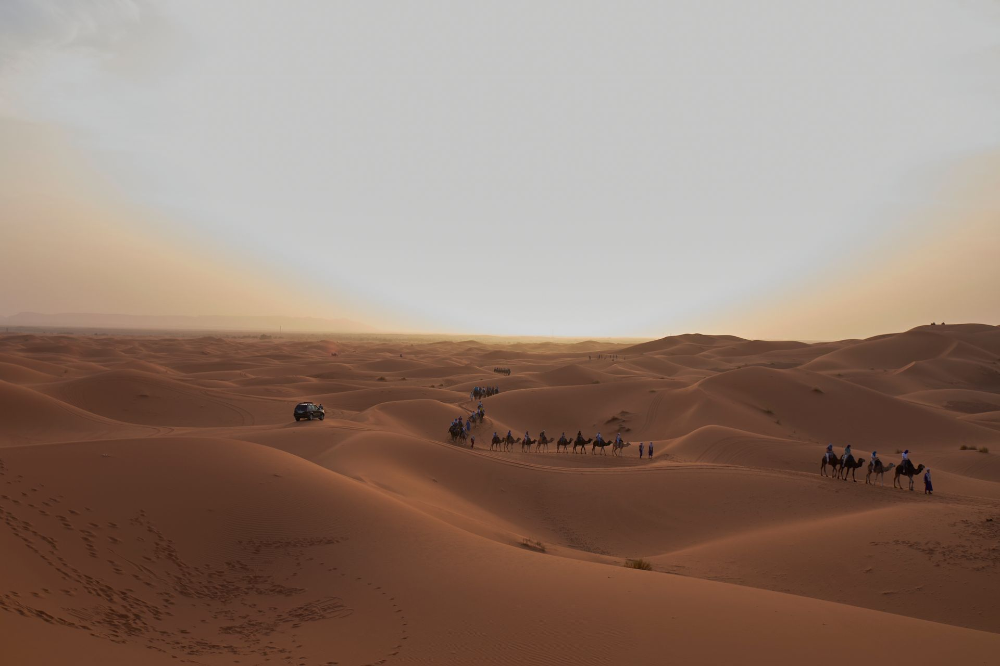
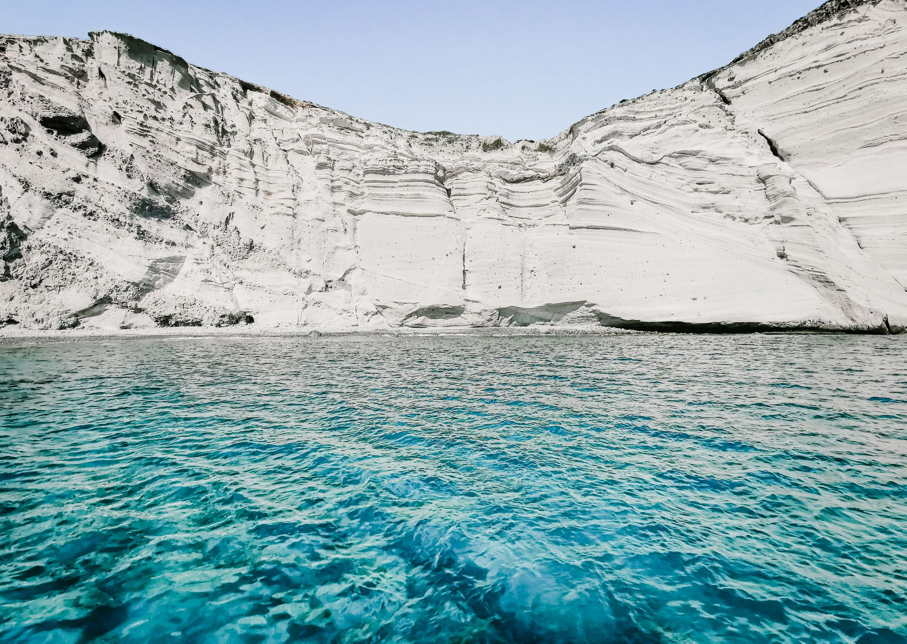
Scrollytelling — 1

One — the compiler reads the attribute.
Two — parameters are validated before they reach CSS.
Three — channels decide whether effects may compose.
Four — the browser owns the frame loop.
The primitive writes data-kui-step onto the section itself; the highlight above is a plain attribute selector.
Horizontal travel — 1
data-kui="horizontal-scroll distance:250vh" — a JS orchestrator translates the track directly; nothing here is a native scroll container.
Media scrub — 1 of 2
sequence-scrub's frames:/src: params swap in one real still per fifth of the
scroll range via a {i} placeholder in the src pattern — five distinct photos
below, not a filter effect. src is a JS-only text param, so the value never
reaches a stylesheet — it goes straight to <img>.src — which is why the shared
CSS-escape guard on data-kui values leaves braces alone for this one param. The
grayscale→color wipe is layered on top from the same real --kui-progress the primitive
publishes, so both mechanisms are visible scrolling through this one element.
data-kui="sequence-scrub frames:5 src:./assets/scenic_scrub_{i}.jpg distance:220vh"
Navigation — 1
scroll-spy writes data-kui-active onto the tracked section and mirrors it onto whatever target selector you point at — here, the matching nav link.
Region
Region
Region
Region
Native CSS passthroughs — 2
scroll-snap-x / scroll-snap-y just set scroll-snap-type/-align — these are real independently-scrollable containers, not JS-driven like the horizontal track above. Drag or scroll them directly.